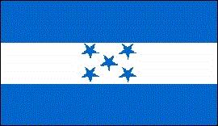

Honduras
|  |  |
Información general
Nombre oficial: República de Honduras
Área: 112 492 km²
Costas: 820 km
División política:18 Departamentos
Departamento Cabecera
- Atlántida La Ceiba
- Colón Trujillo
- Comayagua Comayagua
- Copán Santa Rosa de Copán
- Cortés San Pedro de Sula
- Choluteca Choluteca
- El Paraíso Yuscarán
- Francisco Morazán Tegucigalapa D.C.
- Gracias a Dios Puerto Lempira
- Intibucá La Esperanza
- Islas de la Bahía Roatán
- La Paz La Paz
- Lempira Gracias
- Ocotepeque Nueva Ocotepeque
- Olancho Juticalpa
- Santa Bárbara Santa Bárbara
- Valle Nacaome
- Yoro Yoro
Unidad monetaria: Lempira
1 Lempira = 100 céntimos
Idiomas: Español (oficial); miskito, garífuna, tawaka, pech, tolupan; algunas comunidades de origen extranjero hablan también inglés, chino y árabe (no oficiales)
Fiesta nacional: 15 de septiembre, Día de la Independencia
Gentilicio: Hondureño
Hora oficial: GMT -6 horas (normal/verano)
Miembro de: ONU, OEA, MCCA
Curiosidades
- La represa del Cajón alimentada por el río Humuya tiene una altura de 226m y una capacidad de 5 650 millones de m³
- El viejo Imperio Maya tuvo su asiento en la región de Honduras.
Información adicional en Internet.
Perfil Ecónomico
Perfil Demográfico
Densidad de población: 54 hab/km²
Perfil Cultural
Alfabetismo: 81 %
Religión:
- Católicos: 94,2%
- Protestantes: 1,3%
- Otros: 3,3%
- Espiritistas: 0,4%
- Ortodoxos: 0,4%
- Budistas: 0,2%
- Musulmanes: 0,1%.
Algunas figuras notables:
- Policarpo Bonilla (1858-1926). Político y escritor
- Alberto Membreño (1859-1921). Escritor y filólogo
- Juan Ramón Molina (1875-1908). Poeta
- Ramón Rosa (1848-1893). Ensayista
- José Trinidad Reyes (1797-1855). Poeta
- Froilán Turcios (1875-1943). Novelista y poeta
- José Cecilio del Valle (1780-1834). Patriota y escritor
- Rafael Heliodoro Valle (1891-1959).Profesor, historiador, ensayista, cronista y poeta
- José Antonio Velázquez (1906). Pintor
Lugares declarados patrimonio mundial por la UNESCO
- Ruinas mayas de Copán.
- Reserva de la Biosfera de Río Plátano.
Sistema de Gobierno
Constitución vigente: Noviembre de 1982
Sistema ejecutivo: Presidente (electo por mayoría simple de votos para un período de cuatro años, no reelegible. Desde 1985, la Ley Electoral da la victoria al candidato cuyo partido obtenga más votos).
Sistema legislativo: Congreso Nacional (128 diputados).
Sistema judicial: Corte suprema (nueve magistrados, elegidos por un término de cuatro años), cinco Cortes de Apelación y juzgados de Letras y de Paz.
Gobierno subdivisional: Los gobernadores departamentales son elegidos por voto popular; los municipios (289) son autónomos.
Aproximación histórica
Situada entre el Mar Caribe al norte, Nicaragua al este y sudeste, el Salvador al sur y Guatemala al oeste se encuentra Honduras. Posee entre otras; las islas de la Bahía, las del Cisne y los cayos Cochinos, en el Golfo de Fonseca.
La cordillera Centroamericana que recorre Honduras de noroeste a sudeste divide a Honduras en dos regiones: la oriental y la occidental, con alturas que sobrepasan los 2 000 m. Entre los ramales de la cordillera se encuentran fértiles valles en los que se asienta la población.
En la época precolombina el territorio actual de Honduras fue parte de la civilización maya. El viejo Imperio Maya que se extendía desde el norte hasta la costa oeste hondureña tuvo su centro en la actual Honduras. En la zona de Copán, fundada en el año 436 y una de las ciudades más esplendorosas de los mayas, se han encontrado pruebas importantes del arte de este pueblo. A la llegada de los españoles quedaban pocas huellas de la civilización maya y las tribus que encontraron no habían alcanzado un alto nivel de desarrollo.
Descubierta por Américo Vespucio se independizó de España en 1821, junto con las provincias de Centro América de las que se separó en 1838.
La economía de Honduras es dependiente de las exportaciones de bananos, tabaco y otros productos agrícolas.
«-- ir al comienzo
«-- regresar